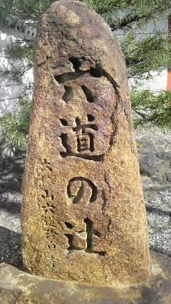
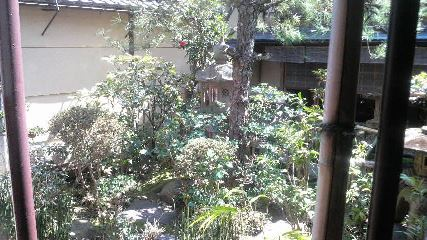
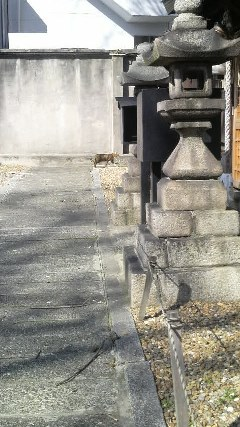

京都・伏見
2013/03/11 - 3日目 京都
5時起床、習慣ってこわい。
テレビ見たり朝シャワーしたりしてホテルをチェックアウト。
これで\3500はお安い、満足。
今回利用したホテルはこちら
さて、この日の予定は京都周辺の神社仏閣巡り。
主に東方の元ネタとなった地点の聖地巡礼みたいな感じにしようと思ってました。
まずはホテル最寄りの深草駅から京阪本線を北上して清水五条駅へ
↓
前日の反省を活かして、清水五条駅のコインロッカーに荷物のあらかたを預けておく。
ほぼ手ぶらで朝の町をてってこ歩いて着きました。
六波羅蜜寺
また前門のところ撮るの忘れてたよ・・・
ここには宝物殿があって中は撮影禁止でしたが、とても力強い薬師如来像と四天王像がありました。
（宝物殿拝観料（学生）\500）
どれも重要文化財認定されており、過去から現代へ続くパワーを持っていました。
このお寺だけではありませんが、神社仏閣には特有の「空間のパワー」があると思います。
静けさやその重層な雰囲気は近代化が進んだ現代の社会には存在しないもので、
短い間だけでもそれを感じることができたのは貴重な体験でした。
特に信仰をもたない自分でも心が落ち着きます。
東方的にみると、ここでは地蔵菩薩坐像・立像があり、映姫様の前身ですね。
引き続き六波羅蜜寺を探索、
お牛さん・・・
平清盛の塚
入り口付近では如来象がお出迎え
・
・
・
徒歩で少し移動。このあたりには寺院が集まってますので一通りまわります。
んで、西福寺
六道の辻に関することがここらへんのお寺で多いです。
詳しくは次の六道珍皇寺で
・
・
・
またちょっと歩いて六道珍皇寺
ここにはそのままずばり六道の辻の塚が

境内には小野篁が冥土への入り口にしたという井戸(?)が
本殿右奥には格子越しに見える庭っぽいところがあり、その格子から覗けるようになってます。
そこの脇にあった案内板
蓮台野とかでてくるあたり秘封とも関連しそう
この世とあの世が混じり合う虚数空間。
六道の辻にも生死にともなう魅力があると思いませんか。
さて、ここからは京都市街の方へ移動していきます。
六道珍皇寺そばの小学校で元気な子供の声を聞きながら道を戻って清水五条駅へ。
忘れずに荷物を回収して京阪本線で南下して東福寺駅へ。
そこからＪＲ奈良線で京都駅へ。
京都駅のコインロッカーへ再び荷物を投入して活動開始。
ここからは主に鵺（ぬえ）めぐりをします。ぬえっちょ
京都駅から地下鉄烏丸線で四条駅へ。
徒歩でちょっと行って神明神社に到着。
鵺は頭は猿、尾は蛇、手足は虎、鳴き声は鶫の怪鳥（けちょう）という、今で言うキメラです。
そんな妖怪が昔出たそうです。
基本的なエピソードは↑の看板の言う通りです（見えぬえか）。
で、ここにはその鵺を仕留めた矢の「矢じり」が奉納されています。
源三位頼政の弓(矢)
弓矢で仕留めたのは源三位ですが実際にとどめを刺したのは部下だったようです（↑の写真、右の絵図）
平家物語から取材した謡曲「鵺」についての説明はこちら
討ち取られてから供養してくれた僧に感謝し、勝者・頼政の栄光と
冥土へ流されていく自分（鵺）の有様を謡ったものらしいです。
うつほ舟・・・空（から）の船ということでしょうか。既に亡霊なので。
また来た道を戻り四条駅から地下鉄烏丸線で今出川駅へ。
ここでの目的は昼食。
1日目の友人から親子丼がおいしい店を教えてもらっていたのでそこへ行ってみることに。
多少迷いつつ、ケータイの電池がやばくなってコンビニでバッテリを買ったりしつつ。
地図見ながら結構遠いなと思ったのでバスを利用しつつ到着。

今度は撮るの忘れなかった・・・が、
・・・まだ閉まってましたorz
開店は12時だそうなのでそれまで付近で時間潰しを。
公園があったので入ってみると隣に神社が
首途八幡宮
ここも時間が止まっているかのような心地よいプレッシャー。
神社という空間が持つ力はすごい。
おみくじがあったので引いてみることに、結果は・・・小吉、うん、まあね。
おみくじと一緒に何かついてきたので開けてみると・・・
星ちゃんの上司
ちっこい毘沙門天がついてきました。かわいい。
ここ、首途八幡宮は源義経が奥州へ向けて旅立った地として建てられたようです。
源義経奥州首途之地
だから首途＝門出なんですね。
・
・
・
というわけで時間がきたので親子丼がおいしいと評判の店「鳥岩楼」へ。
時間とともに行ったつもりだったけど既に第一陣で満員。
しばし待つ間にこんなもの発見
繋がるのか・・・これ？でもプッシュ式だから見た目より新しいか
玄関口を中からパシャリ
意外と外人さんも多い。さすが評判の店
そして空いたようで奥に通され、中庭の木を見ながら着席。
きれいやのー
そして待望の親子丼。ちなみにこの店はメニューは親子丼オンリーです。専門店
親子丼 \800
親子丼にはだしがきいててとても味が濃かったです。おいしい。
右上のは鳥スープでちょっと味薄かった、これで釣り合いが取れてるのかもしれません。
大満足。
帰り際に中庭を別アングルで

帰りもバスで今出川駅へ戻り（京都市内巡回バスは一律 \220）
烏丸線で烏丸御池駅へ。烏丸御池駅で東西線へ乗り換えて二条駅へ。
→
二条駅そばの千本通（某曲と似て（ry ）→
千本通りを北上して目的地は二条公園。
途中に神社発見
すまぬ・・・俺はあなたのことを何も知らない・・・
大宮姫命稲荷大神を祀っている小さな神社でした。
京都の神社はかなり住宅地に溶け込んで存在してる気がする。
それだけ地域密着型ということか。
・
・
・
そして二条公園到着。（しまったまた全景撮るの忘れてた）
ここに来た目的は鵺大明神と鵺池跡を見るため。
奥のほうにあるんですが・・・
逆光で見えぬえ
・・・鵺池碑とあります。肉眼でもちょっと文字が判別しづらいなーと思っていたら看板が他にありました。
ここ、鵺池は先の鵺を仕留めたときに、鵺の血がついた矢じりを洗ったという池だそうです。
どうやら経年劣化で再建立したようですね。
で、鵺大明神が祀られている小さな神社
鵺池跡
左に見えるのが鵺池碑（復元）
二条城は修学旅行時に行ったので今回はスルー。
二条駅から東西線で三条京阪駅へ行きます。
三条京阪駅
この写真必要か？
目的は大将軍神社。
徒歩でてくてくと到着。
ここには鵺の森があるそうです。
大将軍神社自体はスサノオの命を主神として祀られております。
鵺の森は樹齢８００年を超える銀杏の大樹であり、頼政の鵺退治を偲ぶ象徴となっていたようです。
しかし境内でそれらしいものは見られず・・・現代には残ってないのか？
探し方が甘かったかもしれないがとりあえずそれっぽいものを撮影
左の大木は銀杏の木じゃないしなあ・・・
あ、ぬこ発見

これで一応まわりたいところは全部終了。
まだ午後15時ぐらいだったが、所用時間も考えて帰路に着く。
東西線で三条京阪駅から烏丸御池駅経由で烏丸線を南下、京都駅へ。
荷物を回収後あらかじめとっておいた新幹線の復路チケットで東京へ（東海道新幹線）
行きでは見られなかったふっじさーんをパシャリ
東京から東北新幹線で仙台へ
着く頃にはさすがに日が落ちてました。
お疲れ様でした！
あとがき 2013/03/24
旅行に行ったのとこの記事を書くのとに結構間が空いてしまいました。
かなり記憶が劣化してると思いますが撮った写真を見ながら思い返して書きました。
写真供養と自分の糧として消化するために、整理することが目的でした。
では、最後までこんな駄文につきあって頂いたみなさまに感謝を。
旅行記 メニューへ戻る